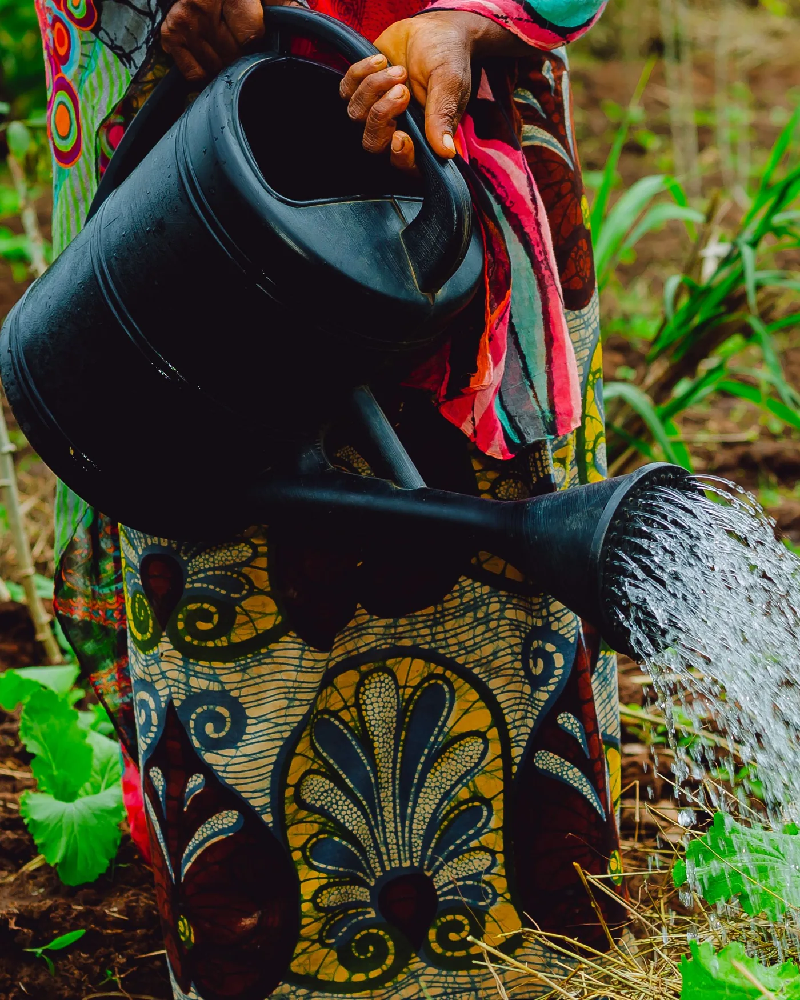

Campagna di esempio
Aiuta un progetto in Africa con la cifra che vuoi.
Scegli quanto donare, una volta o ogni mese. Qui vedi a che punto è la raccolta e che cosa diventa il tuo dono.
Dona ora312 persone hanno donato 15.600 €. Mancano 9.400 € e 21 giorni alla chiusura.
Cifre di esempio. Ogni punto del cerchio è l'1% della cifra da raggiungere.
Come si aiuta, in tre passi
-
Scegli la cifra
Da 5 € in su. Nella sezione Dona vedi subito che cosa diventa.
-
Una volta o ogni mese
Il dono mensile si ripete ogni mese e si ferma quando vuoi, dal link nell'email di conferma.
-
Paga e ricevi la ricevuta
Con carta o bonifico. La ricevuta arriva per email e il tuo dono entra nel cerchio della raccolta.

Domande sulla donazione
Posso donare senza carta?
Sì, con un bonifico. Gli estremi sono nella sezione Dona, sotto il modulo.
Come fermo la donazione mensile?
Dal link nell'email di conferma, in qualsiasi momento, senza dover scrivere a nessuno.
Ricevo una ricevuta?
Sì, per email, subito dopo il pagamento.
Dove vanno i soldi?
Ogni campagna dichiara la cifra da raggiungere e a che cosa serve. Quando la raccolta si chiude, la stessa pagina mostra come è stata spesa.
La donazione si può detrarre dalle tasse?
Dipende dalla forma giuridica dell'associazione: la risposta va verificata e scritta qui.